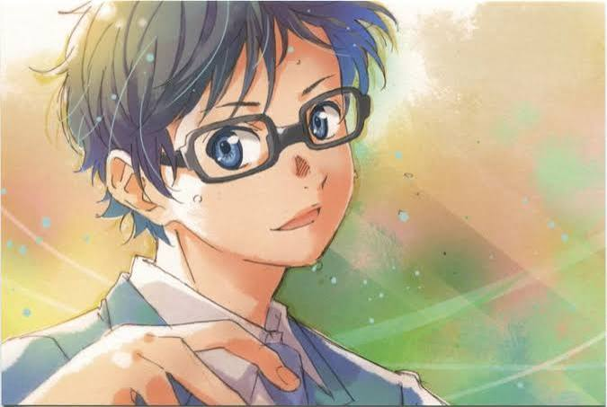
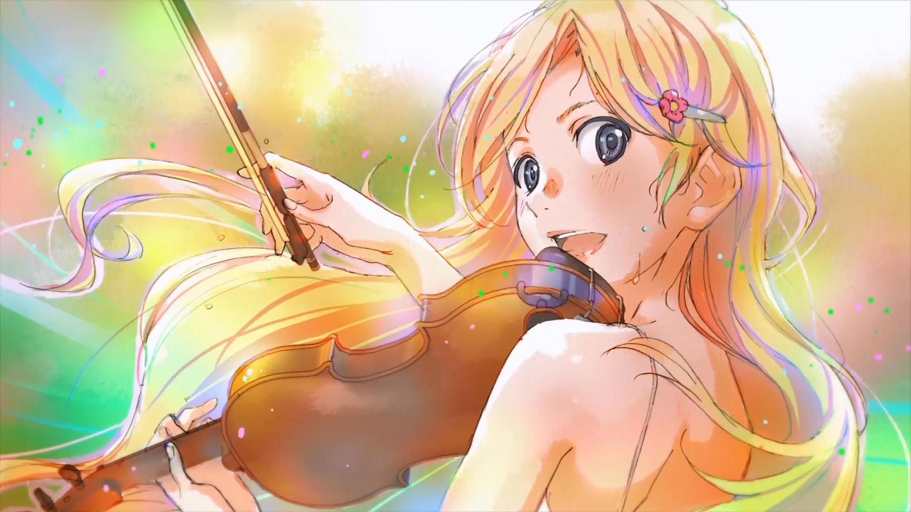

Kepada Bapak/Ibu/Saudara/I,
Kousei Arima & Kaori Miyazono
Akan Melangsungkan Resepsi Pernikahan:
"> Lihat UndanganAkan Melangsungkan Resepsi Pernikahan:
"> Lihat UndanganOleh Karena Itu, Dengan Segala Hormat, Kami Bermaksud untuk Mengundang Bapak/Ibu/Saudara/i, Untuk Hadir pada Acara Pernikahan Kami
"Musim semi yang mempertemukanku denganmu adalah awal dari dunia yang penuh warna. Hari ini, kami mengikat janji untuk melangkah bersama di bawah langit yang sama. Terima kasih telah menjadi saksi dari melodi baru kehidupan kami."
Putra Dari Bapak Takahiko Arima
dan
Ibu Saki Arima


"Seperti dentingan piano dan gesekan biola yang saling menyapa, pertemuan kami mengubah hari-hari biasa menjadi melodi yang tak terlupakan. Di musim ini, kami memutuskan untuk memainkan lagu kehidupan kami bersama-sama seumur hidup. Sampai ke ujung waktu, semoga harmoni ini tak pernah usai."
Putra Dari Bapak Yoshiyuki Miyazono
dan
Ibu Ryouko Miyazono